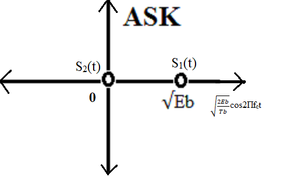

Pass band implementation of Amplitude shift keying, Frequency Shift Keying, Binary Phase Shift Keying: Generation and Detection
Passband Amplitude Shift Keying (ASK)
Theory:
Amplitude Shift Keying (ASK) is one of the simplest digital modulation techniques. In **passband** ASK, the amplitude of a high-frequency sinusoidal carrier wave is varied (or keyed) according to the digital information. This allows digital data to be transmitted over channels that are inherently analog, such as radio frequency (RF) channels or optical fibers.
In a binary ASK (BASK) system, binary symbol '1' is typically represented by transmitting a sinusoidal carrier wave of fixed amplitude Ac and fixed frequency fc for the bit duration Tb. Binary symbol '0' is usually represented by the absence of the carrier (amplitude zero) for Tb seconds. For this reason, binary ASK is also widely known as On-Off Keying (OOK).
The passband ASK signal can be generated by applying the incoming binary data (represented as a baseband pulse train, e.g., '1' as a positive voltage and '0' as zero voltage) and a continuous sinusoidal carrier to the two inputs of a product modulator (mixer). The output of the product modulator is the modulated ASK wave.
Baseband vs. Passband ASK:
It's important to distinguish between baseband and passband signaling:
Baseband ASK: In a baseband digital transmission, the digital data (e.g., binary '0' mapped to 0V and binary '1' mapped to 5V) is transmitted directly over a physical medium, typically a wire. The signal occupies frequencies starting from DC (0 Hz) up to a certain bandwidth. No carrier modulation is involved; the digital information itself is the baseband signal.
Passband ASK: In passband ASK, the digital binary information modulates the amplitude of a sinusoidal carrier signal at a higher frequency (fc). The resulting signal occupies a band of frequencies centered around the carrier frequency fc, rather than starting from DC. This allows the signal to be efficiently transmitted over media like radio channels, optical fibers, or coaxial cables, which are optimized for specific frequency ranges. Amplitude is varied to represent binary data, but the signal always oscillates at or near the carrier frequency.
Passband ASK Transmitter:

Fig 1: ASK Transmitter
The input binary data stream (represented by a unipolar ON-OFF baseband signal, e.g., '1' as +V and '0' as 0V) is multiplied with a sinusoidal carrier wave.
The mathematical representation of a binary ASK (OOK) signal for
a bit duration Tb is:
s(t) = Ac cos(2πfct) for binary '1'
s(t) = 0 for binary '0'
where Ac is the carrier amplitude and fc is the carrier frequency.
Passband ASK Receiver (Coherent Demodulation):
For optimal detection of passband ASK signals, a coherent detector is typically employed. This method requires a locally generated carrier signal at the receiver that is perfectly synchronized in both frequency and phase with the carrier used at the transmitter.
The received passband signal is multiplied by the synchronized local carrier and then passed through an integrator (or low-pass filter) over the bit duration Tb.
- For binary '1' (carrier present): The output of the integrator will be proportional to the energy of the carrier, specifically Ac2Tb/2.
- For binary '0' (carrier absent): The output of the integrator will be ideally zero (assuming no noise).
A threshold detector then compares this integrated output to a predetermined threshold (typically half of the '1' symbol's output) to decide whether a '1' or '0' was transmitted.

Fig 2: ASK Receiver
The receiver's primary goal is to accurately distinguish between the presence and absence of the carrier in the passband to recover the original binary data, minimizing the impact of noise.
Constellation Diagram of passband ASK

Fig 3: Constellation Diagram of Binary Passband ASK (OOK)
In the constellation diagram, the two signal points are:
Symbol '1': P1 = (√Eb1, 0)
Symbol '0': P0 = (0, 0)
The distance of symbol '1' from the origin is √Eb1. The energy of symbol '1' is Eb1.
The distance of symbol '0' from the origin is 0. The energy of symbol '0' is 0.
The Euclidean distance between the two signaling points, d10, is √Eb1.
High-order ASK refers to using more than two amplitude levels to
represent multiple bits per symbol (e.g., 4-ASK uses four amplitude
levels to send 2 bits per symbol). These would appear as additional
points along the same axis in the constellation diagram, with varying
distances from the origin.
Passband ASK Under Different Noise and Channel Configurations
The performance of passband ASK modulation is significantly influenced by the characteristics of the communication channel, especially noise and fading.
Passband ASK Modulation with Additive White Gaussian Noise (AWGN):
AWGN is a fundamental noise model in communication systems,
characterized by a constant power spectral density across all
frequencies and a Gaussian amplitude distribution.
When a passband ASK signal s(t) is transmitted through an AWGN
channel, the received signal y(t) is given by:
y(t) = s(t) + n(t)
Where:
s(t) is the transmitted passband ASK signal.
n(t) is the AWGN component, affecting the amplitude of the received
signal.
The effect of AWGN is to add random fluctuations to the amplitude of
the received carrier. During coherent demodulation, this noise
component can push the received symbol value across the decision
threshold, leading to bit errors. The probability of error is inversely
related to the Signal-to-Noise Ratio (SNR). Higher SNR leads to a
lower probability of error and better performance.
Passband ASK Modulation with Rayleigh Fading:
Rayleigh fading is a statistical model for the random amplitude
variations of a received signal that arise from multipath
propagation in wireless channels, especially in the absence of a
dominant line-of-sight path.
Mathematically, the received signal y(t) in the presence of Rayleigh
fading can be represented as:
y(t) = h(t) * s(t) + n(t)
Where:
h(t) is the complex fading coefficient, whose magnitude |h(t)|
follows a Rayleigh distribution, causing random attenuation of the
signal amplitude.
s(t) is the transmitted passband ASK signal.
n(t) is the AWGN.
The random fluctuations in |h(t)| introduce significant and rapid
variations in the amplitude of the received ASK signal. This can lead
to "deep fades" where the signal amplitude drops significantly, making
it very difficult for the receiver to distinguish between the 'ON'
(binary '1') and 'OFF' (binary '0') states, even with moderate AWGN.
Consequently, the bit error rate (BER) for ASK in Rayleigh fading
channels is much higher than in AWGN channels without fading.
Diversity techniques and error correction codes are often necessary
to improve performance in such environments.
In summary, while Passband ASK is simple and effective in clean channels, its amplitude-dependent nature makes it vulnerable to noise, fading, and channel impairments. Its application is often best suited for scenarios where simplicity is paramount, or where channel conditions are relatively stable and benign, or when combined with robust error correction and diversity techniques.